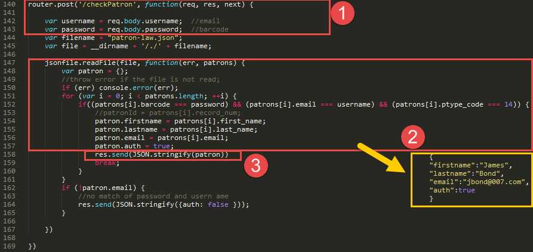

Build Room Reservation System using Sierra REST API
2016 SCIUG Conference at Loyola Marymount University (Oct. 14)
Created by Seong Heon Lee, Systems & Technology Librarian
Hugh & Hazel Darling Law Library, Chapman University
Welcome everyone. Hi, My name is SeongHeon. I am Systems & Technology Librarian at Chapman University Law Library. First of all, thank you for being my audience. Today, I want to share about our summer project. We built a room reservation system using Sierra REST API. I hope that this session can be meaningful for you in some ways.
Final Product
During the last summer, Law Library implemented a room reservation system. It tooks about 6-7 months including planning and preparations before summer. I will talk about the details of the whole project later in this session. We could finish the project before the start of this Fall semester. This screenshot shows our final outcome. The new room reservation system is currently running on a production server and serving law students everyday.
Why Did We Start?
An Email from David, Circulation Librarian
"We notice a strange problem with the Law School’s Study Room Reservation module. Apparently if you make a 1 session at 8am it will reserve the room for the entire day. At any other time of the day you can make a 1 hour session with no problem. When you get a chance would you look into this?"
Let me start with this question: Why did we start this project? One day (6/19/2015), I got an email from David, our circulation librarian. He notified me a strange problem that RRS reserves the entire day although selecting the first hour (8:00-9:00) only.
Reply to David
"Thanks David for the notification. Anthony seems out of office till 6/21. Will Keep you posted."
So, I replied to David. What a great email that I could send as a Systems & Technolgoy Librarian! I got a little frustrated, because I had never seen the system code and we could not access the person who should fix it for the next two days.
... A Week After (6/25/2015)
David:
Okay it looks like the problem has been fixed. Also, it looks like Bill was the one who resolved it instead of Anthony.
Me:
Great! Thanks for informing this.
A week later, David emailed me that the problem has been solved, but by Bill not by Anthony. Although I was so puzzled about what was going on behind the scene, I felt OK when I heard that the problem was fixed.
... Two Weeks Later (7/10/2015)
David:
It looks like there is another problem. I don’t know if this is related to the problem we had before. It seems if you make a reservation that ends at 10pm, it will not show the reservation for the last hour.
David emailed to IT to check the problem.
Two weeks later, David emailed me again that there was another problem. For some reasons, the last 'reserved' hour display as not-reserved. How is this possible? What's going on?
... A Week Later (7/16/2015)
Me:
Did IT fix this problem?
A week later, I emailed to David to ask if IT took care of the problem. The answer was not yet.
... Another Week Later (7/23/2015)
David:
Anthony, do you know the status of this case?
Another week later, David emailed to IT to get status update.
... Another Two Weeks Later (8/7/2015)
Me:
Did IT fix the problem?
David:
Not yet. Anthony said that he would get back to me past Monday, but I didn’t hear from him.
Another two weeks later, I asked David about the status. [Click] And he told that the problem had not been resolved yet. We were getting tired, losing patience.
... A semester started,
[Read] Our law school semester starts 2 or 3 weeks earlier than our main campus. So, we can be badly affected if we are caught up in a wrong maintanence cycle. This was exactly the case. The last reserved hour still shows "not-reserved".
... About a month later (Sep. 21)
About a month later, we see this screen. [Click] The prevous problem was kind bearable. But, this was not. Users cannot access to the system as such. I contacted IT to find the cause of the problem.
Email from IT
Would you write STEP-BY-STEP procedure of making a reservation?
This is the email reply that I received from IT. [Read] What? Really? My frustration level was growing. You can understand me if you had the same experience: how hard is it to write descriptively with details when you get completely emotional.
Summary of the Story
Manage Library Technology
Internally
vs.
Outsourcing
Why do I share this story? It is not my intention to talk about the inefficiency of IT support. Chapman IT Department had big overhaul last year, migrating Campus Resoruce System, re-structuring staffing, etc. They are reasoanble excuses. [Click] The reason that I bring this story is to question about system management process: Are you going to manage library technology INTERNALLY or with OUTSOURCING?
So, we questioned:
Do we need a new system?
How Did We Start?
First, disucss available options.
Three options:
Fix it
Leatherby's
Other Alternatives
How did we start? We were natually in the position to start discussing about the future of our RRS. We spent the whole semester of Fall 2015 for that discussion. There were three options that we can consider to pursue.
LibCal as a Candidate
In Feb. 2016, our library director was informed from law library director listserve that LibCal is a good product. And she wanted me to check it.
Testing LibCal
Intuitive and flexible Admin Pages and Features
Bundled with other sister products, such as calendar, appointment
Booking widgets embeddable on other websites
Limit access by domains (e.g. @mail.chapman.edu)
User authentication module, LibAuth
Reliable Supports: users and software
I signed up Libcal trial to test its functions. I was personally impressed by clean design and powerful featuers. LibCal was a good candidate for our library. Most importantly, LibCal would provide the chance of customizing our design and policies. These are some highlights of LibCal. [Read]
User Authorization
Open login (default): name and email
Restricting by domain: @mail.chapman.edu
Third-Party Integration: Shibboleth, LDAP, SAML, CAS, SIP2, and a remote self-hosted script option
Because Law Library allows only law students to sign in the Room Reservation System, we must have a login procedure to authenticate law students only. So, I check the login options of LibCal with testing it and reading the product website. I learned that there are three options. LibCal,by default, is open to all users as long as they have a name and an email. Secondly, LibCal can limit access by email domains like @mail.chcapman.edu. However, this option would still allow all Chapman students to access to the system. And finally, other third party options like LDAP are available. However, we could not integrate LDAP with LibCal, because Chpaman LDAP did not recognize "LAW" students. It was kind a bummer, because all other features had already passed my criteria. User Authorization problem appeared as a deal breaker.
Remote Self-Hosted Script
"The self-hosted option is for if you have a custom configuration that's not covered by the other options. What we do is POST the username and password to a remote URL you host. We recommend that the authentication returns json formatted like..."
{
"firstname":"James",
"lastname":"Bond",
"email":"jbond@007.com",
"auth":true
}
SpringShare emailed me back with an explanation. [Read] Translating this English email, they simply meant an Web App which can receive a POST request from LibCal and return a user record.
Sierra REST APIs
Sierra REST APIs has Patron Find API. Provided with a barcode number, the Patron Find API will return a patron record with name, email, and more.
Web App
However, we need one more application layer for this system desgin to work. Because Sierra REST API does not return patron data in the format that LibCal required, we need a Web App that can handle the middle process between LibCal and Sierra REST APIs.
What does the Web App do?
Receive an user request from LibCal
Pass the user request to Sierra REST API
Receive user data from Sierra REST API
Process user data in the format that LibCal requires
Return user data to LibCal
Let's dissect more closely the functions of the Web App itself. [Read] Those five steps are implemented in this code.
Code View of Each Step
First, setup an URL path (isPatron) in the WebApp to which LibCal will send a Post request. LibCal also send both username(email) and password(barcode). The WebApp converts both inputs into variables for the next steps.
Behind the Project
A Short Code with Patron Find API
No access to Patron Find API till the 28th of July 2016
Patron Find API available with Sierra 2.2
Sierra's full OS upgrade
Developer Sandbox
Local Custom Patron API
Now let me step back a little bit to share the behind stories of the project.
A Custom Patron API
This is the diagram of Local Custom Patron API. First of all, the WebApp extracts patron records from Sierra PostgreSQL. And then, the WebApp stores them locally in the web application server. In this design, when LibCal requests a patron data, the WebApp sends a patron record directly from its own server, without delegating the request to Sierra.
Extract data (law students) from Sierra PostgreSQL
Let's break down a little bit in details. First, it extracts law student records from Sierra Databases. Sierra Database is approchable through Sierra Direct SQL Access. I use KNEX library when communicating with our local PostgreSQL database. KNEX is a JavaScript library of SQL query builder, which works with major databases such as PostgreSQL, MySQL, MSSQL, SQLite.
Send data to LibCal

Next, this is a breakdown of the interaction between LibCal and the WebApp. After receiving a patron request, the WebApp reads the JSON file to find a patron. Then, after formatting the patron record as LibCal requires, the WebApp sends it back to LibCal. The code in this screen and in the previous one provides all functionalities for the Local Custom Patron API.
Accidental Invention
Custom Patron API
On the 28th of July, two weeks before this semester started, we could eventually upgrade to Sierra 2.3. I could finally access to Patron Find API. In spite of tight schedule, I could quickly complete the WebApp because of the the prototype that I had already built using the Developer Sandbox. In the meantime,the Local Custom Patron API I built had no use anymore, although I had a good idea on how we are using it. Imagine what will happen when Sierra Server fails. This is not something that would frequently happen. But it is still possible. Because Sierra REST APIs are running on Sierra Application Server, the WebApp will not authenticate patrons if Sierra Server does not work.
Offline Service
What do I mean by "Offline Service"? Let's see the diagram again. Even though the WebApp does not access to Sierra REST API or Sierra Database, the WebApp can still serve without problem. Because it contains patron records inside, it can respond to LibCal with a patron record. Without a connection to Sierra API, the Local Custom Patron API can still perform its duty. So, I decide to use it when Sierra Server is down. It is an accidental invention. It's kind cool.
Go Live!
The WebApp is completed. What is the next step? We have to run it on a production server. Technology stacks that I chose for the WebApp are Node.Js and Express.Js. Node.Js is a server-side JavaScript environment, on which we can run a web application. Express.Js is a Web Application Development Framework for Node.JS. I developed the WebApp using Express.JS. Node.JS can work as a standalone webserver. However, it is usually integrated with traditional web server in production (e.g. Apache, Nginx, IIS-Windows Web Server), because it can serve static pages better and does not need a separate process manager like PM2. I used a third-party module, "IISNODE" which will link a node.js application to IIS web server. Before this summer, I prepared a window server with IT Department and configured both IIS web server and IISNODE module, so that we could deploy our production app as soon as it was ready.
Development vs Production
4 Second Timeout IssueDon't expect that your code in the development environment works in the same way that it works in the production server.
Unknown rules: 4 second timeout
IIS Process Recycling
their party apps: Virus-Scanning
Automatic request script
When we deployed our application for production, it looked working well. I tested user login serveral times every day manually with a dummy student account. However, I discovered soon one strange problem. Every first-time login in the morning failed. And then everything works fine for the rest of day. I started chasing the cause of the problem. I discovered that the error was related to a "timeout"" issue. I was curious why and where this timeout occured. Speaking with SpringShare development team, I learned that LibCal disconnected automatically its request if our WebApp did not respond in 4 seconds. This is a security feature of LibCal/LibAuth. After the disconnection, the WebApp had no way to communicate anymore with LibCal regarding that request. This means that each request must be answered within 4 seconds without any delay.
Monitoring the App on Server
Who access?
Requestor IP
Response Time
Simple View for Quick Review
Last but not least, we need a monitoring system to check the actitivies of the Web App on the server. I was particularly interested in who's accessing, requestor IPs, and resonse time. Of course, it must be easy to review quickly.
IIS Web Server Logs
IIS log files include many information (15 fields); Obviously, I did not need all. And it is also hard to read because of different length of each line, not pretty indented and aligned. So, I wrote a small python script which extracts only necessary fields from the original log files.
Code of Log Analyzer
First, it extracts only 9 fields. Seond, it color-codes the requests from LibCal to distinguish them from other requests. All LibCal requests will be stylized in blue font, except any request caught in 4 second timeout rule. They will appear in red font. Third, it marks other requests bold if they are caught in 4 second timeout. This will catch the request coming from PowerShell which warms up the web server after the process recycle.
Log Looks Like
The simplified log file looks like this. As you see, readability gets improved. We can quickly scan all requests, because each request is aligned in pretty format. The requests in Blue-color are all from LibCal. Blue means that they pass 4 second timeout rule. Good part is that I don't need to read the response time of each request (which is in red box) line by line. And bold means that it failed 4 second timeout rule. We see one request at 11:00 (UTC, 4:00 PT). This request comes from PowerShell Script right after the process recycle every early morning. Because this request will warm up the WebApp's process and make it ready to serve next logins, the users will not exprience any failure of login.
REST API
Re presentational S tate T ransferWeb Architectural Style with 6 contraints: client-server, stateless, cashable, uniform interface, layered system, and code on demand
Separation of Concerns (client vs server)
Stateless (No meddling each other)
HTTP Protocol (Get, Post, Put, Delete)
So far, I have talked about why and how we built a Room Reservation System. Before closing this session, let me briefly touch upon REST API. With purpose, I arrange this part at the end of my talk. Because we have already seen some real examples, it will be much easier to grasp its concept. What is REST API? Why is it so a buzzword today?
Representation & Resource
As you see, Client and Server interact with each other. Notice that they have their own concerns (User Interface vs Data Resource). The Client sends a request to the Patron Find API Endpoint with parameters. An endpoint is the place that the Server promises to serve a certain type of resource, in this case, Patron Find Resource. And parameters present which resource the Client wants to get. Here, parameters are specified by a bacode and selected fields. Both Endpoint URL and parameters make a URI (Resource Identifier). Then, the Server receives the URI request and respond "a resource". We call this 'A resource' a representation of resource or STATE. Notice that this representation is purely created by the Client's decision (with parameters). The Server itself has nothing to do with the "state". The Server just serve all possible resources at Patron Find Endpoint; the Client consumes a specific patron record at the endpoint using parameters.
REST and Buffet
food (resources) are served at the bars (endpoints)
This is an easy analogy. You are familiar with how buffet restaurant works. Chelfs prepare sets of foods and display them at the bars. And the customers choose the food at the bars which they like to eat. Chelfs do not take direct orders from consumers, although Chelfs select the dishes based on their study of customers' tastes. And the customers cannot complaint about why Chelfs cook in a certain styles and why some foods are not provided. Here, we can find clear sepration between the Chelfs and the customers. This will improve the efficiency of preparing foods. Although the customers cannot make an order directly, they have pretty good enough choices at the bars. They can choose the foods with their current state of mind. Interestingly enough, Chelfs do not decide the state of customer taste. That decision is all up to customers. [Click] Chelfs and customers never talk each other directly. However, food (resource) are served at the bars (endpoints).
Sierra Developer Sandbox
Let's take a look at a real Sierra REST API. This is Sierra Developer Sandbox.
Other REST APIs
There are many REST APIs out there.
Why REST APIS:
Access to Existing Data
(e.g. Sierra Patron Records)
Finally, let me finish this session with sharing my thought on why REST is so popular today. The first thing is accessiblity to existing data. Data is so valuable today and will be more so in the future. Digital data is accumulating with the greatest speed in human history. We saw that those zillion valuable data is available "for free" through many REST API services, like the ones from Google, Facebook, and Twitter. It reminds me of the 19th century Gold Rush, when many poeple believed in California Dream. People endeavored a long journey to serach for golds in hills and rivers. Somebody may try to build data from fresh start. However, if those data is freely available, do we need to build them again?
Why REST APIS:
Reuse the data in different apps
(e.g. Patron Authorization Web App)
Second, reusing the same data in different apps is smart. The data will be totally transformed in a new context. Data is like seed. It can be replanted in different gardens and can flurish in a new form with unique beauty. Like this vertical garden (Vertical Garden at CaixaForum in Madrid, by Patrick Breen). Reusing ready-available data, we can also quickly build a new app for other purposes.
Why REST APIS:
Integrate different systems
(e.g. LibCal/LibAuth and Sierra)
Third, when data being shared, the systems that share the same data are being more closely integrated. As you know, last year at the annual conference, Innovative introduced "Open Library Stack". After aquiring many products, they planned to consolidate those different products based on APIs. They also open the data to the third party. This will certainly produce an econsystem that Sierra data can be consumed by different product,as our library did with LibCal.